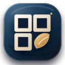
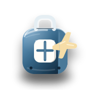

WEBINSOLITOHome
VIAGGI
Parti leggero. Con tutto sotto controllo.
Costi, bagagli, documenti e piccoli calcoli di viaggio raccolti in un unico spazio semplice, prima di partire e mentre sei fuori.
Prova: bagaglio, budget, carburante, valuta, documenti…
Vai subito a
PRIMA DI PARTIRE
Le cose importanti restano davanti.
Gli strumenti più utili per prepararti sono separati dai calcoli specifici: meno ricerca, meno passaggi, più chiarezza anche da telefono.
A COLPO D'OCCHIO
BagagliPrepara senza dimenticare l'essenziale.
BudgetCapisci prima quanto spenderai.
SpostamentiValuta costi e alternative.
ViaggioMeno note sparse, più controllo.
STRUMENTI PRINCIPALI
Prima della partenza
Le azioni che servono più spesso per organizzarti.
ALTRI STRUMENTI
Durante il viaggio
Calcoli e utilità per esigenze più specifiche.
Non trovo uno strumento con queste parole. Prova con “budget”, “bagaglio”, “carburante” o “valuta”.